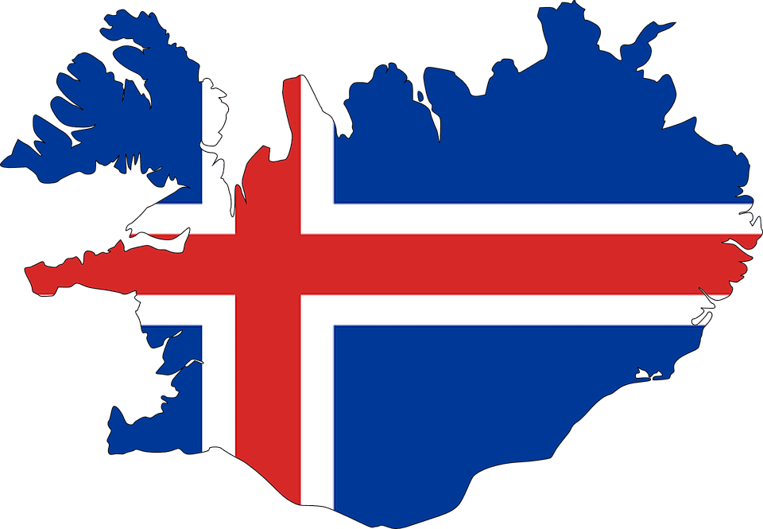
Исландия - это
Удивительная и привлекательная страна с огромным количеством природных достопримечательностей - водопадов, лавовых полей, гейзеров, термальных источников, фьордов, ледников и вулканов.
Удивительно, как это все уместилось на такой относительно небольшой территории. В свете такого природного разнообразия почти полное отсутствие значимых рукотворных достопримечательностей не очень-то и разочаровывает.
Столица: Рейкьявик
Площадь: 103 125 км2
Население: 353 070 чел.
Язык: Исландский
Валюта: Исландская крона (kr)
Исландия основана в 930 году
Так же, Исландия - это
Голубые исландские ледники
Визитная карточка этой необыкновенной северной страны, 8 процентов территории которой покрыто льдом. В Исландии ледники называются jökull «йёкюдль» и многие ледники находятся над вулканами.
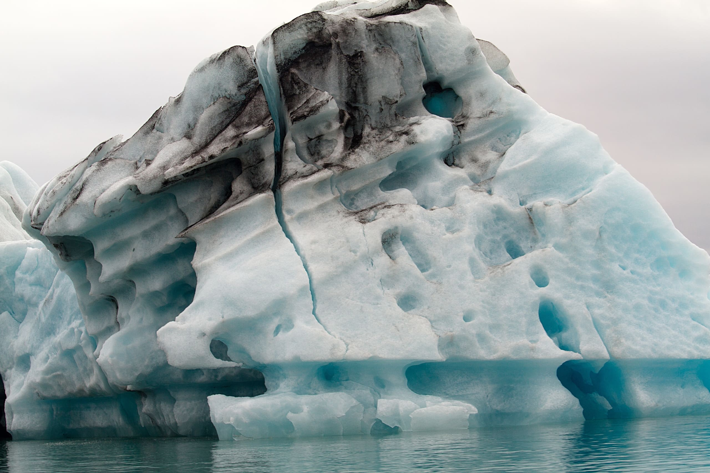
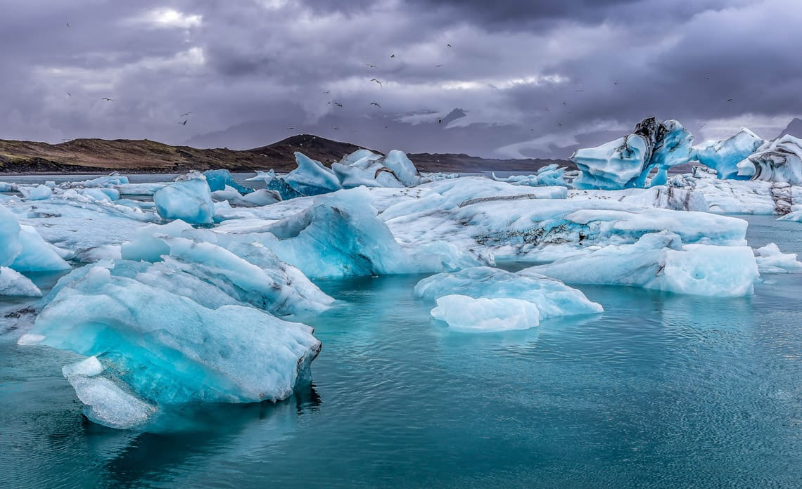
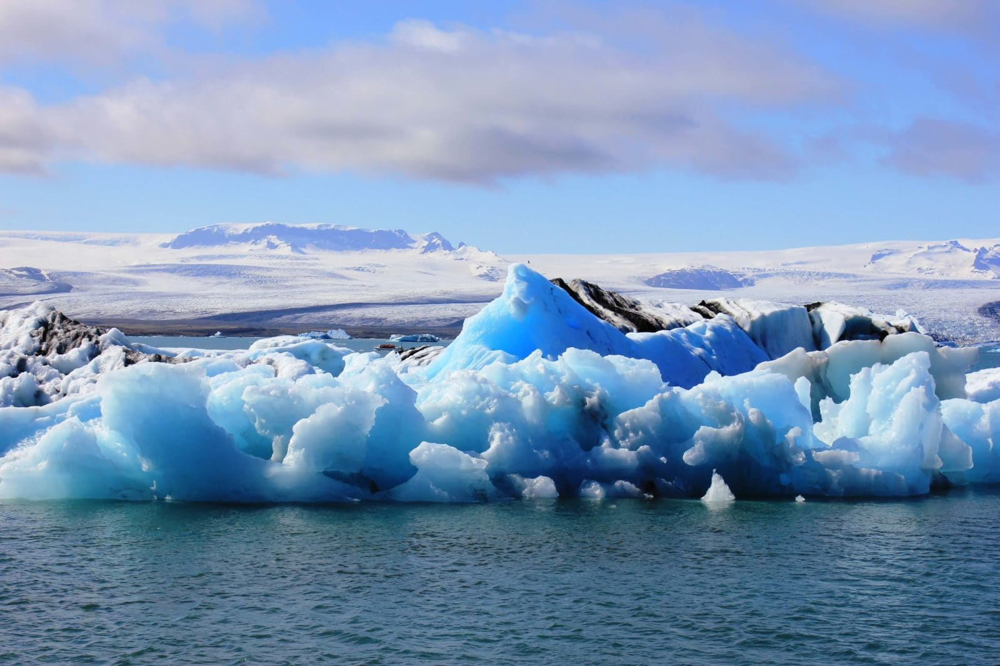
Уютные города
В Исландии городские поселения делятся на два типа — сити (крупные города) и таун (малые и средние города). Некоторые крупные города Исландии имеют статус независимого города.
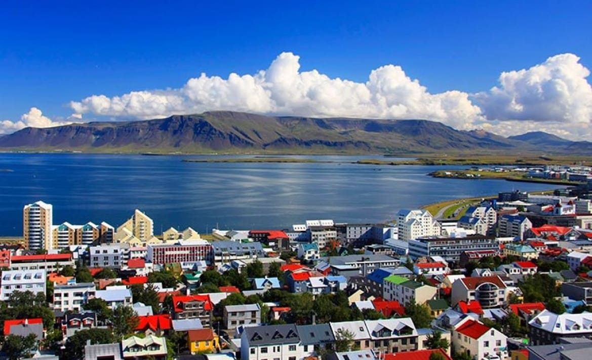


Северные сияния
Согласно старинным исландским легендам, северное сияние возникает, когда эльфы на земле танцуют и веселятся. Древние скандинавы, предполагали, что это блеск доспехов валькирий, богинь, определявших, кто выиграет битву, а кто погибнет.
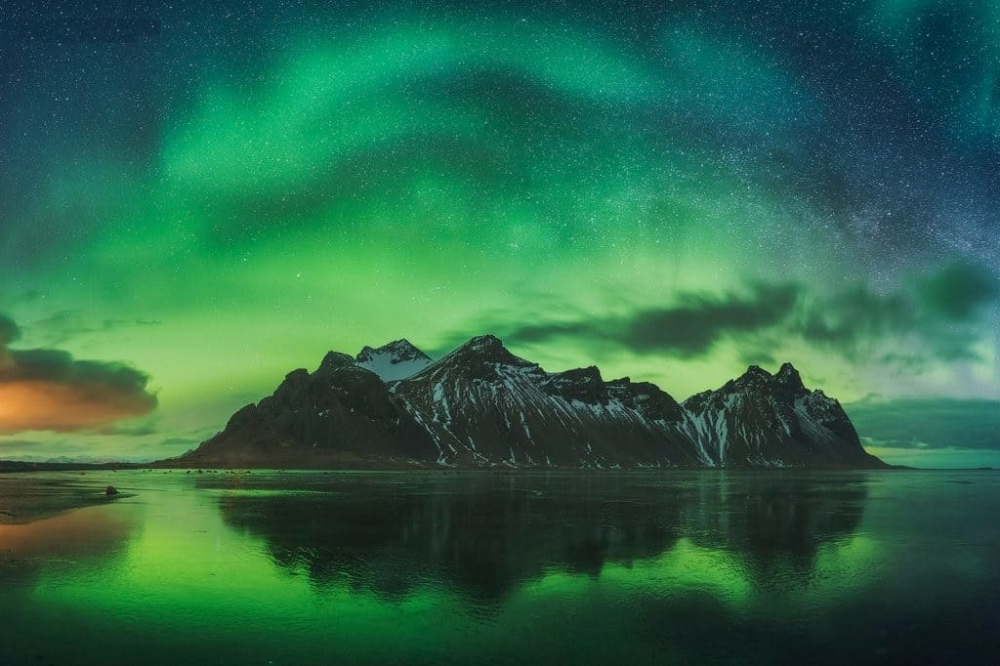

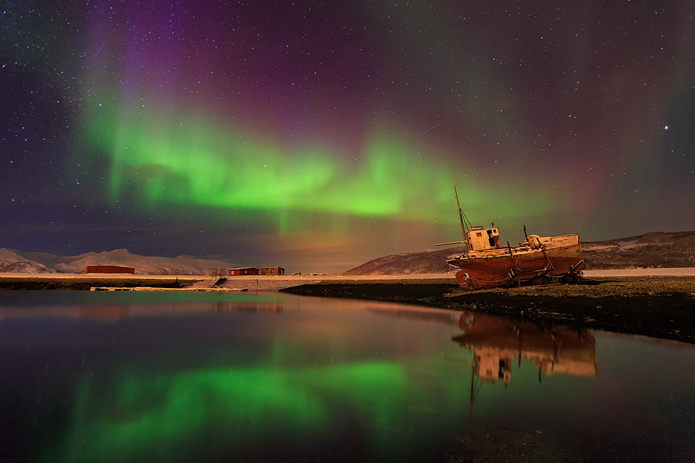
Уникальная порода
Это настоящее царство дикой природы, такой концентрации уникальных природных явлений, как здесь, вы не найдете больше нигде. Исландию недаром зовут страной «огня и льда» - именно здесь в большом количестве сохранились вулканы и ледники – удивительные природные артефакты. Прекрасные горные ущелья, каньоны и водопады поражающие своей красотой. Флора и фауна этой прекрасной маленькой страны манят сюда туристов со всего света, и даже капризный климат им не помеха.
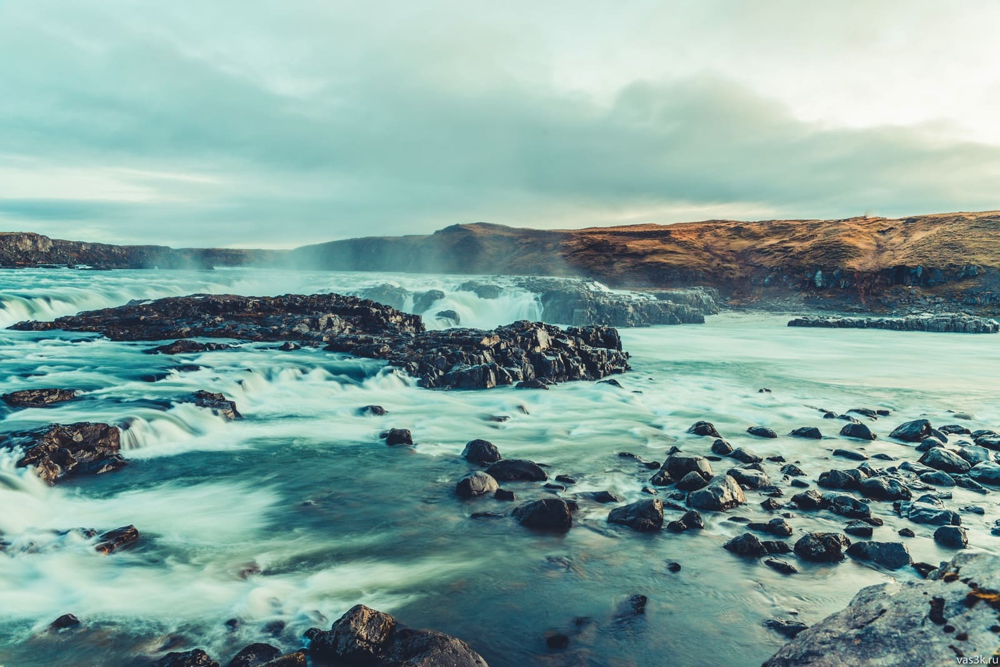
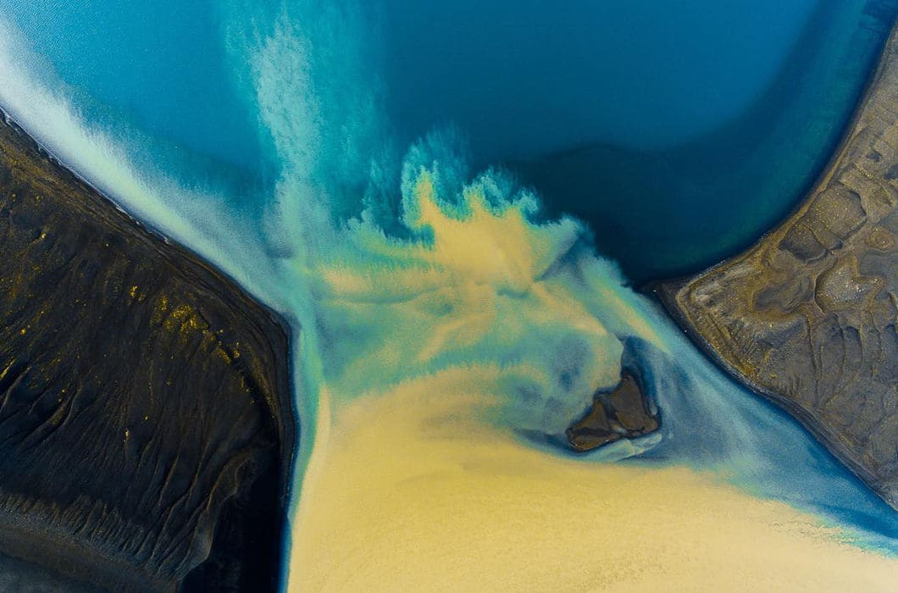
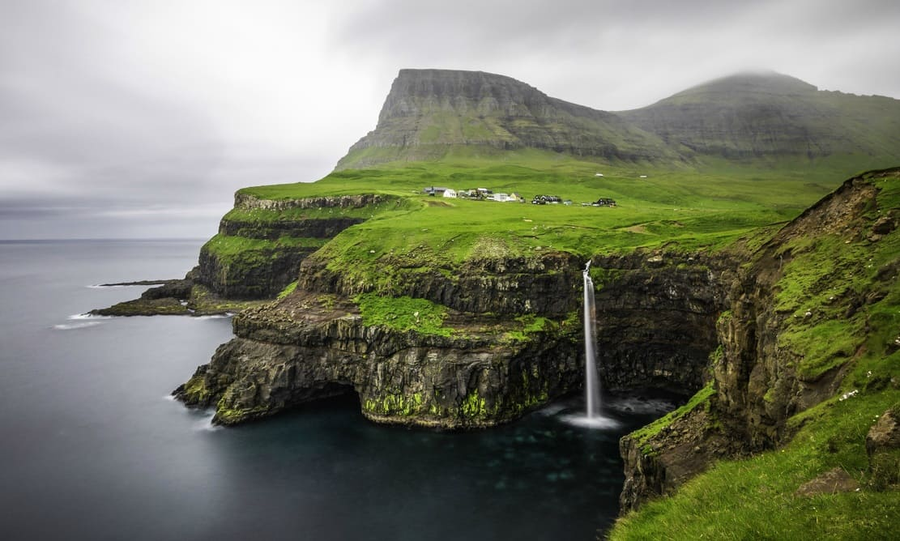
И конечно же гейзеры
Гейзеры — настолько уникальное явление на Земле, что их можно пересчитать по пальцам одной руки. Исландия — единственная страна Европы, в которой есть гейзеры.
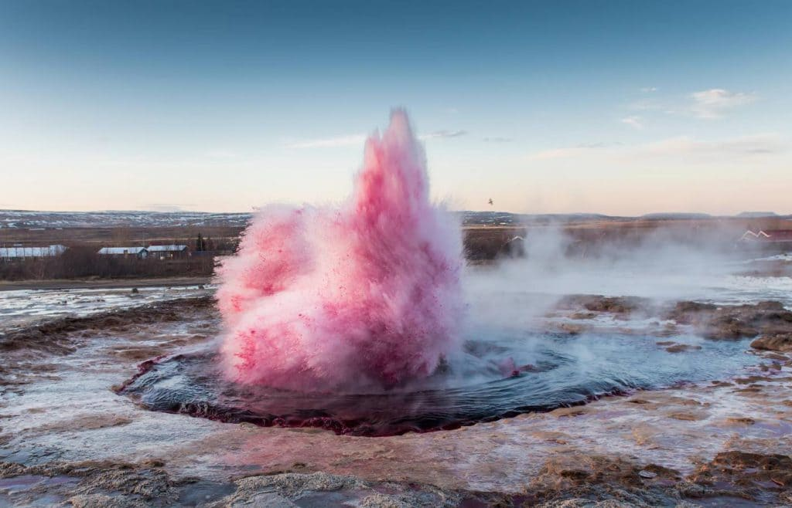
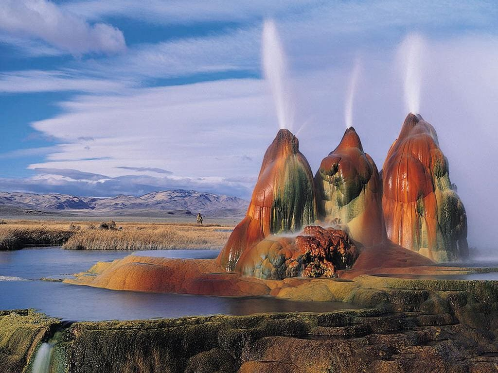
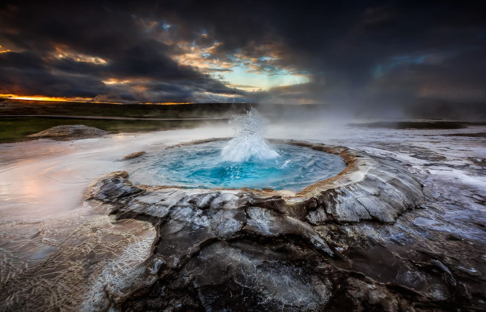